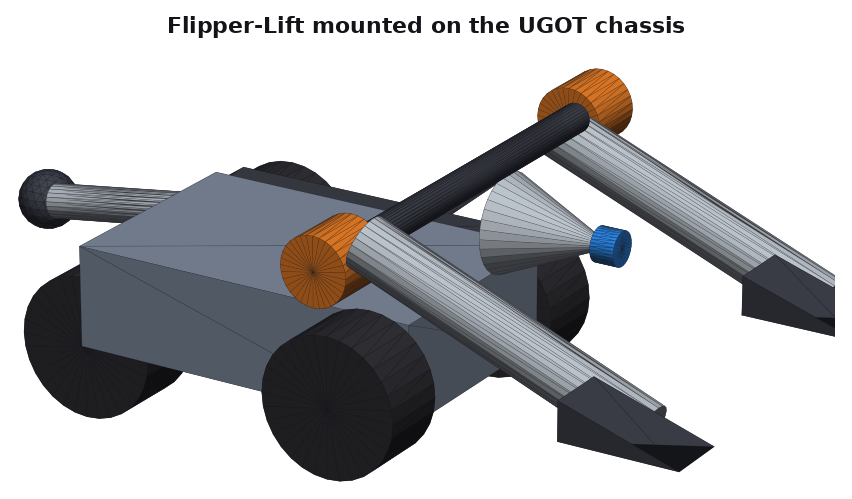
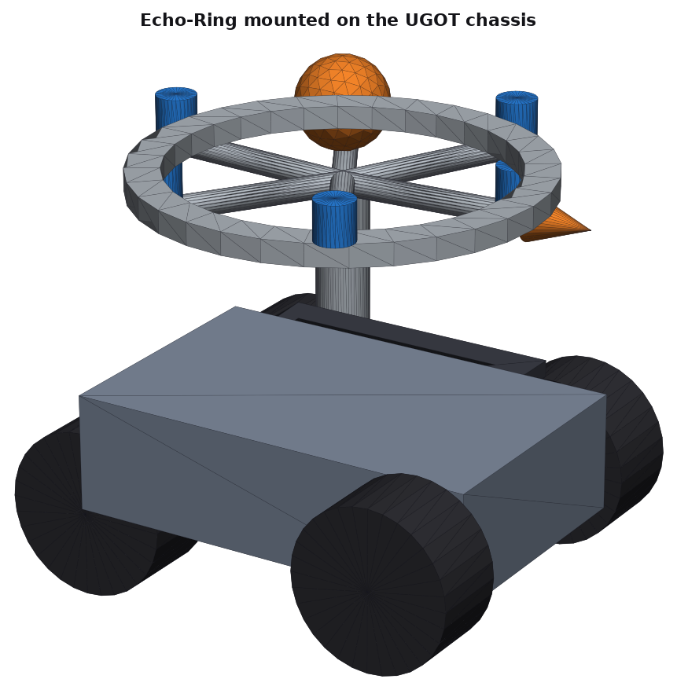
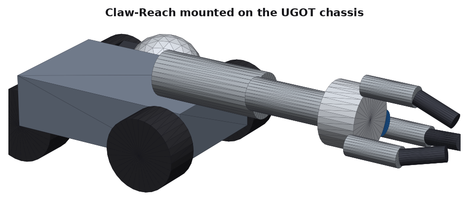
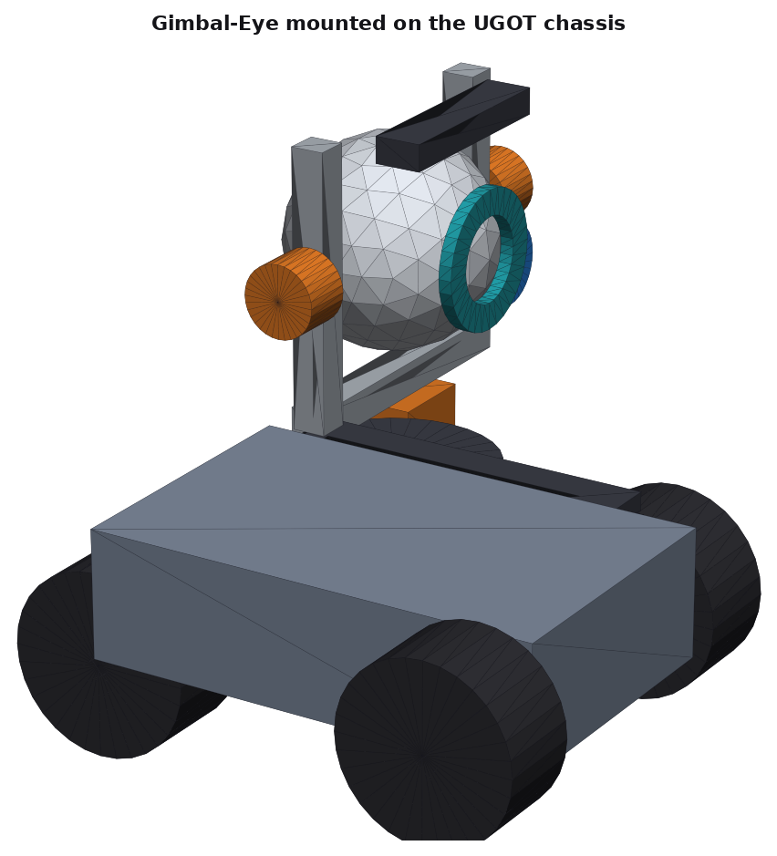
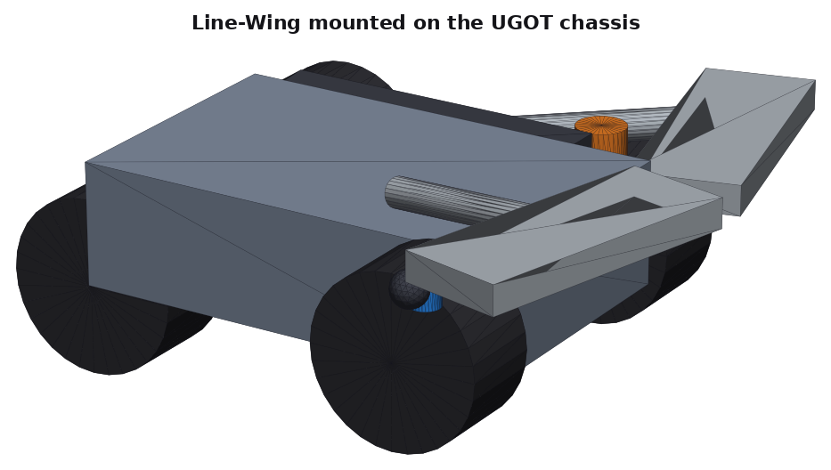
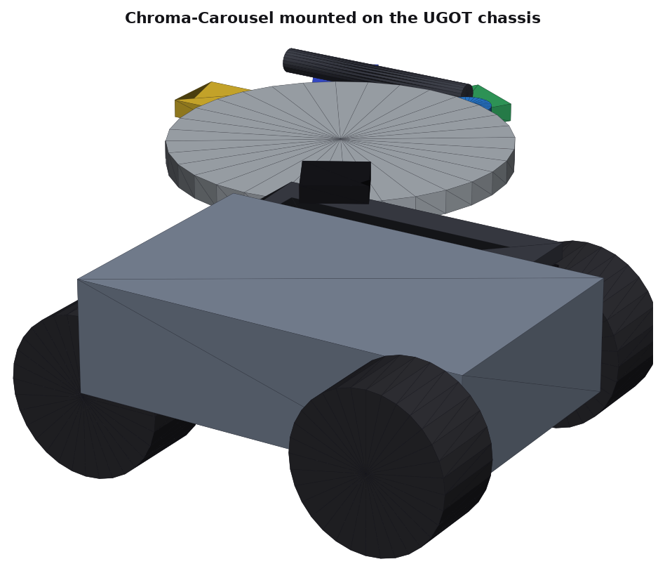

📄 Summative booklets (Word)
Each booklet has the rubric levels, command terms, guiding questions and space to answer. Download it, then make your own copy.
Every lesson at a glance
Each topic has a matching page for every criterion, plus its Tinkercad guide and a zip with the STL files and views.
| # | Topic | A | B | C | D | CAD |
|---|---|---|---|---|---|---|
| 02 | 🧗 Climbing over Obstacles | A | B | C | D | Tinkercad guide · CAD pack |
| 03 | 🎧 Finding People by Sound | A | B | C | D | Tinkercad guide · CAD pack |
| 04 | 🦾 Joint Rescue | A | B | C | D | Tinkercad guide · CAD pack |
| 05 | 🛞 Flexible Movement | A | B | C | D | Tinkercad guide · CAD pack |
| 06 | 👁️ Observant Eyes | A | B | C | D | Tinkercad guide · CAD pack |
| 07 | 🛰️ Automatic Patrol | A | B | C | D | Tinkercad guide · CAD pack |
| 08 | 🧭 Tracking and Tracing | A | B | C | D | Tinkercad guide · CAD pack |
| 09 | 🎨 Colour Detective | A | B | C | D | Tinkercad guide · CAD pack |
| 10 | 🔎 Smart Recognition | A | B | C | D | Tinkercad guide · CAD pack |
| 12 | 📦 Smart Sorting | A | B | C | D | Tinkercad guide · CAD pack |
| 13 | 🚦 Safe Driving | A | B | C | D | Tinkercad guide · CAD pack |
| 14 | 📮 Precise Delivery | A | B | C | D | Tinkercad guide · CAD pack |
| 15 | 🚑 Community Rescue | A | B | C | D | Tinkercad guide · CAD pack |
All UGOT lessons (Criterion B exemplars)
Jump straight into any lesson.

TOPIC 02
🧗 Climbing over Obstacles

TOPIC 03
🎧 Finding People by Sound

TOPIC 04
🦾 Joint Rescue

TOPIC 05
🛞 Flexible Movement

TOPIC 06
👁️ Observant Eyes

TOPIC 07
🛰️ Automatic Patrol

TOPIC 08
🧭 Tracking and Tracing

TOPIC 09
🎨 Colour Detective

TOPIC 10
🔎 Smart Recognition

TOPIC 12
📦 Smart Sorting

TOPIC 13
🚦 Safe Driving

TOPIC 14
📮 Precise Delivery

TOPIC 15